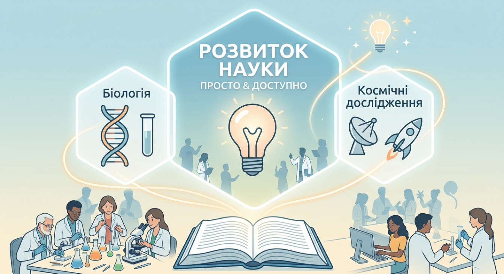

Освіта
Навчання та студентське життя
Університет створює умови для здобуття якісної освіти, розвитку професійних навичок і реалізації творчого потенціалу студентів.
Актуальна інформація про навчання, наукову діяльність та події Запорізького національного університету.
Освіта
Університет створює умови для здобуття якісної освіти, розвитку професійних навичок і реалізації творчого потенціалу студентів.
Наука
Наукова діяльність допомагає студентам поглиблювати знання, працювати над дослідницькими проєктами та знайомитися із сучасними технологіями.

Технології
Вивчення програмування, кібербезпеки та цифрових інструментів є важливою складовою підготовки майбутніх фахівців.
Студентське життя
Спільні проєкти та командна робота сприяють розвитку комунікативних навичок і допомагають студентам обмінюватися досвідом.